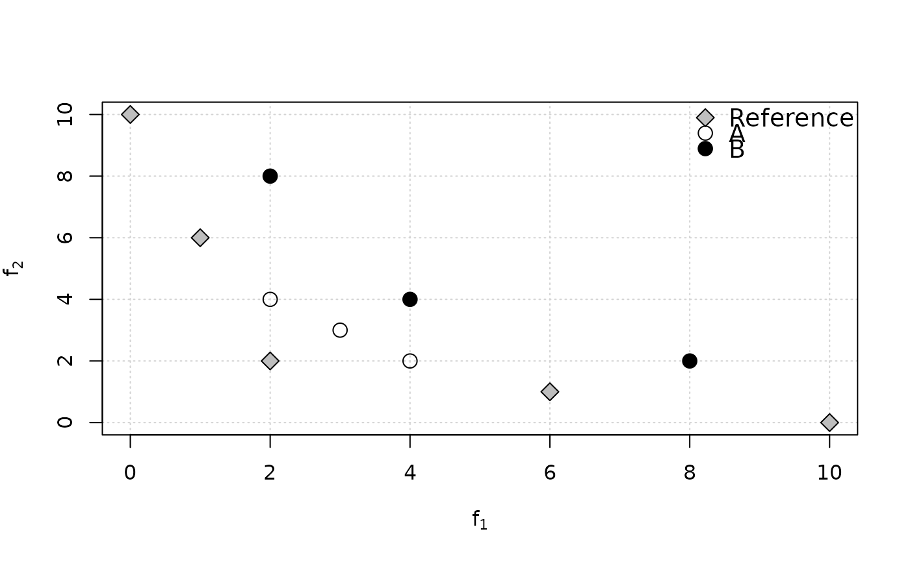

Inverted Generational Distance (IGD and IGD+) and Averaged Hausdorff Distance
Source:R/igd.R
igd.RdFunctions to compute the inverted generational distance (IGD and IGD+) and the averaged Hausdorff distance between nondominated sets of points.
Usage
igd(data, reference, maximise = FALSE)
igd_plus(data, reference, maximise = FALSE)
avg_hausdorff_dist(data, reference, maximise = FALSE, p = 1L)Arguments
- data
(
matrix|data.frame)
Matrix or data frame of numerical values, where each row gives the coordinates of a point.- reference
(
matrix|data.frame)
Reference set as a matrix or data.frame of numerical values.- maximise
(
logical()|logical(1))
Whether the objectives must be maximised instead of minimised. Either a single logical value that applies to all objectives or a vector of logical values, with one value per objective.- p
(
integer(1)) Hausdorff distance parameter (default:1L).
Details
The generational distance (GD) of a set \(A\) is defined as the distance between each point \(a \in A\) and the closest point \(r\) in a reference set \(R\), averaged over the size of \(A\). Formally,
$$GD_p(A,R) = \left(\frac{1}{|A|}\sum_{a\in A}\min_{r\in R} d(a,r)^p\right)^{\frac{1}{p}} $$ where the distance in our implementation is the Euclidean distance: $$d(a,r) = \sqrt{\sum_{k=1}^M (a_k - r_k)^2} $$
The inverted generational distance (IGD) is calculated as \(IGD_p(A,R) = GD_p(R,A)\).
The modified inverted generational distanced (IGD+) was proposed by
IshMasTanNoj2015igd to ensure that IGD+ is weakly Pareto compliant,
similarly to epsilon_additive() or epsilon_mult(). It modifies the
distance measure as:
$$d^+(r,a) = \sqrt{\sum_{k=1}^M (\max\{r_k - a_k, 0\})^2}$$
The average Hausdorff distance (\(\Delta_p\)) was proposed by SchEsqLarCoe2012tec and it is calculated as:
$$\Delta_p(A,R) = \max\{ IGD_p(A,R), IGD_p(R,A) \}$$
IGDX ZhoZhaJin2009igdx is the application of IGD to decision vectors
instead of objective vectors to measure closeness and diversity in decision
space. One can use the functions igd() or igd_plus() (recommended)
directly, just passing the decision vectors as data.
There are different formulations of the GD and IGD metrics in the literature that differ on the value of \(p\), on the distance metric used and on whether the term \(|A|^{-1}\) is inside (as above) or outside the exponent \(1/p\). GD was first proposed by VelLam1998gp with \(p=2\) and the term \(|A|^{-1}\) outside the exponent. IGD seems to have been mentioned first by CoeSie2004igd, however, some people also used the name D-metric for the same concept with \(p=1\) and later papers have often used IGD/GD with \(p=1\). SchEsqLarCoe2012tec proposed to place the term \(|A|^{-1}\) inside the exponent, as in the formulation shown above. This has a significant effect for GD and less so for IGD given a constant reference set. IGD+ also follows this formulation. We refer to IshMasTanNoj2015igd and BezLopStu2017emo for a more detailed historical perspective and a comparison of the various variants.
Following IshMasTanNoj2015igd, we always use \(p=1\) in our implementation of IGD and IGD+ because (1) it is the setting most used in recent works; (2) it makes irrelevant whether the term \(|A|^{-1}\) is inside or outside the exponent \(1/p\); and (3) the meaning of IGD becomes the average Euclidean distance from each reference point to its nearest objective vector). It is also slightly faster to compute.
GD should never be used directly to compare the quality of approximations to a Pareto front, as it often contradicts Pareto optimality (it is not weakly Pareto-compliant). We recommend IGD+ instead of IGD, since the latter contradicts Pareto optimality in some cases (see examples below) whereas IGD+ is weakly Pareto-compliant, but we implement IGD here because it is still popular due to historical reasons.
The average Hausdorff distance (\(\Delta_p(A,R)\)) is also not weakly Pareto-compliant, as shown in the examples below.
Examples
# Example 4 from Ishibuchi et al. (2015)
ref <- matrix(c(10,0,6,1,2,2,1,6,0,10), ncol=2, byrow=TRUE)
A <- matrix(c(4,2,3,3,2,4), ncol=2, byrow=TRUE)
B <- matrix(c(8,2,4,4,2,8), ncol=2, byrow=TRUE)
plot(ref, xlab=expression(f[1]), ylab=expression(f[2]),
panel.first=grid(nx=NULL), pch=23, bg="gray", cex=1.5)
points(A, pch=1, cex=1.5)
points(B, pch=19, cex=1.5)
legend("topright", legend=c("Reference", "A", "B"), pch=c(23,1,19),
pt.bg="gray", bg="white", bty = "n", pt.cex=1.5, cex=1.2)

cat("A is better than B in terms of Pareto optimality,\n however, IGD(A)=",
igd(A, ref), "> IGD(B)=", igd(B, ref),
"and AvgHausdorff(A)=", avg_hausdorff_dist(A, ref),
"> AvgHausdorff(A)=", avg_hausdorff_dist(B, ref),
", which both contradict Pareto optimality.\nBy contrast, IGD+(A)=",
igd_plus(A, ref), "< IGD+(B)=", igd_plus(B, ref), ", which is correct.\n")
#> A is better than B in terms of Pareto optimality,
#> however, IGD(A)= 3.707092 > IGD(B)= 2.591483 and AvgHausdorff(A)= 3.707092 > AvgHausdorff(A)= 2.591483 , which both contradict Pareto optimality.
#> By contrast, IGD+(A)= 1.482843 < IGD+(B)= 2.260113 , which is correct.
# A less trivial example.
extdata_path <- system.file(package="eaf","extdata")
path.A1 <- file.path(extdata_path, "ALG_1_dat.xz")
path.A2 <- file.path(extdata_path, "ALG_2_dat.xz")
A1 <- read_datasets(path.A1)[,1:2]
A2 <- read_datasets(path.A2)[,1:2]
ref <- filter_dominated(rbind(A1, A2))
igd(A1, ref)
#> [1] 91888189
igd(A2, ref)
#> [1] 11351992
# IGD+ (Pareto compliant)
igd_plus(A1, ref)
#> [1] 82695357
igd_plus(A2, ref)
#> [1] 10698269
# Average Haussdorff distance
avg_hausdorff_dist(A1, ref)
#> [1] 268547627
avg_hausdorff_dist(A2, ref)
#> [1] 352613092